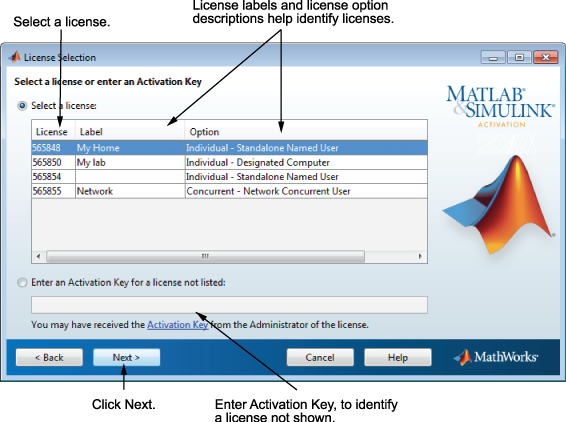

MathWorks® アカウントに関連付けられたライセンスの一覧からライセンスを選択して、[次へ] をクリックします。この一覧には、ライセンスに関する以下の情報が含まれています。
自分の MathWorks アカウントに関連付けられていないライセンスの製品アクティベーションを行う場合は、[リストされていないライセンスのアクティベーション キーを入力] オプションを選択し、アクティベーション キーを入力して、[次へ] をクリックします。"アクティベーション キー" とは、ライセンスを識別する固有のコードのことです。このキーを使用して、ライセンスのアクティベーションを行ったり、ライセンスをアカウントに関連付けたりできます。アクティベーション キーは、ライセンス管理者から入手できます。
メモ: アクティベーション キーのダッシュやスペースの入力は任意です。 |
MATLAB® 学生用ソフトウェアのアクティベーションを行う場合、アクティベーション キーは製品パッケージに含まれているか、MathWorks Web サイトのライセンス センターから取得できます。
